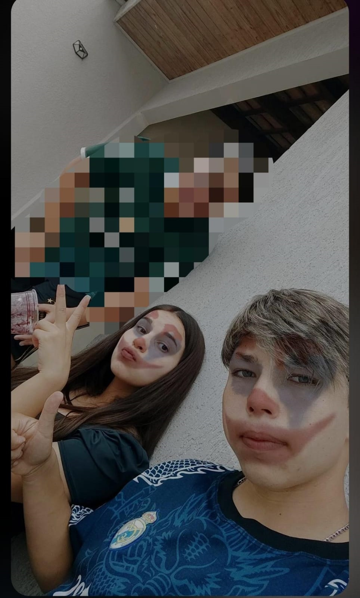

provas de que eu te amo muito!
Acesse aqui a baixo
-
vc e mais perfeita doq este lindo gol
-
ouço essa belíssima musica enquanto penso em vc
-
nada dms so o insta de uma gata maravilhosa
3 mêses mais felizes da minha vida espero que sejam muito mais doq apenas 3 mêses quero que sejam anos ao seu lado meu amor eu te amo muito que não consigo demonstrar
apenas com palavras o tanto que eu te amo e so vivendo pra vc ver o quanto e grande meu amor por vc, Neste vasto universo, onde a incerteza e a transitoriedade reinam,
encontrei uma constante inabalável em você. Desde o momento em que nossos olhares se cruzaram pela primeira vez, soube que havia encontrado algo verdadeiramente especial
Cada batida do meu coração ressoa com o eco do seu nome, e cada pensamento meu se entrelaça com a imagem radiante do seu sorriso. Você é a luz que ilumina os cantos mais
sombrios da minha alma, o abraço que aquece até mesmo as noites mais frias. Em você, descobri não apenas um amor apaixonado, mas também um companheirismo profundo e uma
cumplicidade sem igual. Juntos, construímos memórias que serão eternamente gravadas em nossos corações, e sonhos que se entrelaçam em uma teia intricada de esperança e promessa.
É difícil encontrar as palavras adequadas para expressar a profundidade dos meus sentimentos por você. Mas saiba, meu amor, que cada fibra do meu ser anseia por sua presença,
cada suspiro é um sussurro do seu nome, e cada batida do meu coração é uma prece silenciosa pela sua felicidade.
Prometo amá-la incondicionalmente, nutrir nosso amor com paciência e compreensão, e caminhar ao seu lado, não apenas nos dias de sol, mas também nas noites escuras e tempestuosas.
Você é minha âncora, minha inspiração e minha razão para acreditar no poder transformador do amor.
E assim, diante de todos, declaro com todo meu ser: Eu te amo, hoje, amanhã e para sempre.